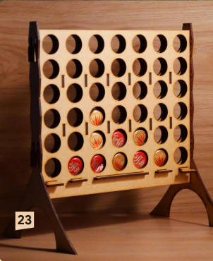

Puissance Quatre
Présentation
Grand classique à deux, le Puissance 4 est un jeu de statégie combinatoire abstrait
Règles
Le but du jeu est d'aligner 4 pions sur une grille comptant 6 rangées et 7 colonnes.
- Chaque joueur joue alternativement en laissant tomber un de ses jetons du haut d'une des colonnes. Ce jeton remplit donc la plus basse case inoccupée de la colonne.
- Le vainqueur est le premier à obtenir un alignement de 4 jetons (horizontalement, verticalement ou en diagonale) de sa couleur.
- Si, alors que toutes les cases de la grille de jeu sont remplies, aucun des deux joueurs n'a réalisé un tel alignement, la partie est déclarée nulle.
Les Tips de la Team
Le jeu a été résolu de façon exacte en 1988, par James D. Allen, et indépendamment par Victor Allis1, à quelques jours d'intervalle (1er et 16 octobre 1988), avec des calculs informatiques. Le premier joueur (celui qui commence la partie) peut s'assurer la victoire s'il joue les coups adéquats. Le seul premier coup gagnant est celui dans la colonne centrale. Un premier coup dans les colonnes adjacentes permet au second joueur d'obtenir une partie nulle (bien que plus facile à jouer pour le second joueur), et un premier coup dans l'une des quatre autres colonnes extérieures permet même au second joueur de décrocher la victoire (à condition qu'il joue parfaitement).